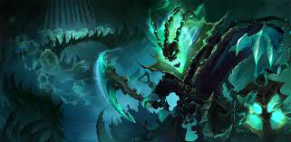

tu devrais essayer Thresh

ancien tortionnaire et joellier, thresh est désormais une âme damné qui aspire celle des mortels dans sa lanterne pour continuer son sinistre travail, il est cependant très utile pour son équipe grâce à cet même lanterne offrant un sauvetage bienvenu ou grâce à son crochet lui permettant d'attraper un adversaire